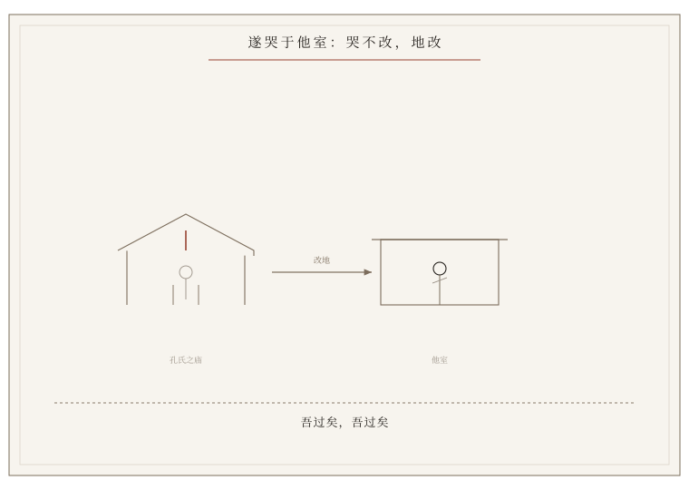

檀弓下 · 四·七十七 · 第 402 课
子思之母死于卫，赴于子思，子思哭于庙。门人至，曰：「庶氏之母死，何为哭于孔氏之庙乎？」子思曰：「吾过矣，吾过矣。」遂哭于他室。
说什么事：子思的母亲死在卫国，讣告到子思，子思在孔氏之庙里哭。门人来了，说：「庶氏的母亲死了，为什么在孔氏之庙里哭？」子思说：「我错了，我错了。」于是改到别的屋里哭。
落在哪一层：以「庙之界」为界。母已改嫁，则为庶氏之母，与孔氏之庙已绝族；哭不可在庙，哭不可免。
为何编在此位：上节论「不可杂」，此节论「不可易地」。臣礼君礼不杂，嫁母与庙亦不杂。
【经】子思之母死于卫，赴于子思，子思哭于庙。门人至，曰：「庶氏之母死，何为哭于孔氏之庙乎？」子思曰：「吾过矣，吾过矣。」遂哭于他室。
【注】嫁母也，姓庶氏。／门人，弟子也。嫁母与庙绝族。
【疏】（底本此节无疏文。）
子思 孔子之孙，名伋。
嫁母 改嫁之母。注云「嫁母也，姓庶氏」。
赴 讣告。
哭于庙 在孔氏之庙中哭。
门人 弟子。
庶氏 母所改嫁之夫家之姓。
何为 为何。
绝族 族属已断。
他室 别的屋子。
子思的母亲死在卫国，讣告到子思，子思在孔氏之庙里哭。门人来了，说：「庶氏的母亲死了，为什么在孔氏之庙里哭？」子思说：「我错了，我错了。」于是改到别的屋里去哭。
此章四句：死、哭、问、改。
一问之后，两言「吾过矣」，一句「遂哭于他室」。
哭没有停，只换了地方。
第一层 「嫁母与庙绝族」 注此六字，是此章之骨。
母改嫁，则于孔氏之庙为绝族。 庙是族之所聚，族既绝，则不得入。
第二层 子思的第一反应 「哭于庙」——他不是不知礼，是情先动了。
《檀弓》不隐圣贤之孙有过。 记其过，正为见其改。
第三层 门人一问的分寸 门人不谏于哭之前，问于哭之时。
且问辞极稳：不曰「不可」，曰「何为」。 以问代谏，留师自省之地。
第四层 「吾过矣，吾过矣」 两言之。
不辩，不援，不曰「此吾母也」。 疏无文，而两言之重，已在其间。
第五层 「遂哭于他室」 此一句最要紧。
礼不许其地，礼给另一地。 若只知「不可哭于庙」，则并哭亦废；子思改室而哭，是「哭不改，地改」。
第六层 与「子上之母」对读 《檀弓上》记子上之母死而不丧，门人问，子上答「不为伋也妻者，不为白也母」。
子思守其情，子上守其制，而皆不失礼。 一改地，一不丧，其义相反而相成。
第七层 此章之仁 礼至严处，往往是「换一个地方」而不是「不许」。
《檀弓》全篇，此处最见礼之体温。
与今日何干 今之处亲族之变，多两极：或一概不认，或一概照旧。
此章给一句：不许在此处，不等于不许有此处。
| 左 | 右 |
|---|---|
| 母死于卫 | 嫁母 |
| 赴于子思 | 讣至 |
| 哭于庙 | 情先动 |
| 庶氏之母 | 已属他族 |
| 何为哭于孔氏之庙 | 以问代谏 |
| 嫁母与庙绝族 | 注之骨 |
| 吾过矣吾过矣 | 不辩 |
| 遂哭于他室 | 哭不改，地改 |
| 子上不丧 | 同题反证 |
画一幅左右对照的简略场景，视点平视。画面左半画一座庙：两根立柱、一道屋檐、檐下一道门限，庙门之上画一道短竖线，示「绝族」之断。庙内画一个浅淡的人形轮廓，作欲入而未入状。画面右半画一间小屋：一个方框、一道平顶，屋内画同样的一个人形，其人跪坐掩面。两画之间画一条自左向右的实线箭头。不画文字。赭色只用在那道短竖线与箭头上。
